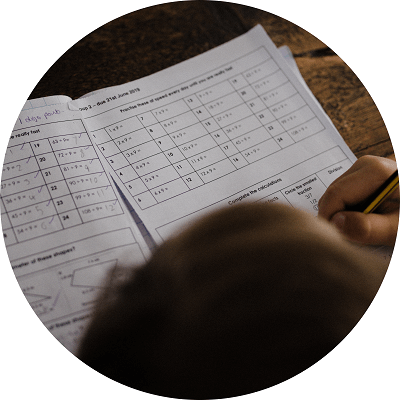

BUSQUEDA Y SELECCIÓN DE PERSONAL
El sistema de búsqueda y selección que brinda V&BB Consultora, consiste en una evaluación exhaustiva del personal, procurando que los postulantes cumplan, no solo con el perfil técnico requerido, sino también con el perfil humano adecuado. Para esto, contamos con un equipo de trabajo especializado en el reclutamiento y la selección de perfiles idóneos para su negocio. Nuestra propuesta es brindarle un servicio a medida, con la más alta calidad de prestación y efectividad, para favorecer la optimización de costos. Esto significa que se definen de manera conjunta las características funcionales del perfil solicitado, según las necesidades de su organización, los requerimientos y alcances del puesto a cubrir.
Dejanos tu CV y forma parte de nuestra bolsa de trabajo!
vbbconsultora@gmail.com
NUESTRAS ETAPAS
-
1 - DEFINICIÓN DEL CARGO Y PERFIL
Relevamiento de Puesto. Conocimiento de la empresa y de la vacante. Descripción del puesto. Elaboración del perfil del candidato.
-
2 - PROCESO DE RECLUTAMIENTO Y SELECCIÓN
Búsqueda y reclutamiento de los Candidatos. Búsqueda interna o externa. De acuerdo a lo que corresponda o la compañía prefiera.
-

3 - EVALUACIÓN DE LOS CANDIDATOS
Informe de entrevista: elaboración de un informe con el resumen de la entrevista realizada.
-
4 - INFORMES Y EVALUACIONES
Exámenes Ambientales Examen Psicotécnico Exámenes Preocupacionales.
-
5 - PRESENTACIÓN DE LA TERNA SELECCIONADA
Selección del Candidato final e incorporación del mismo.
-
6 - CONTROL DEL PROCESO DE SELECCIÓN
Seguimiento de la adaptación del candidato